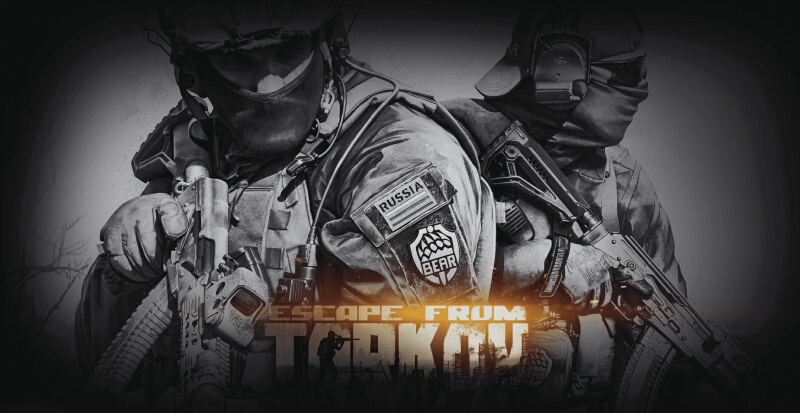
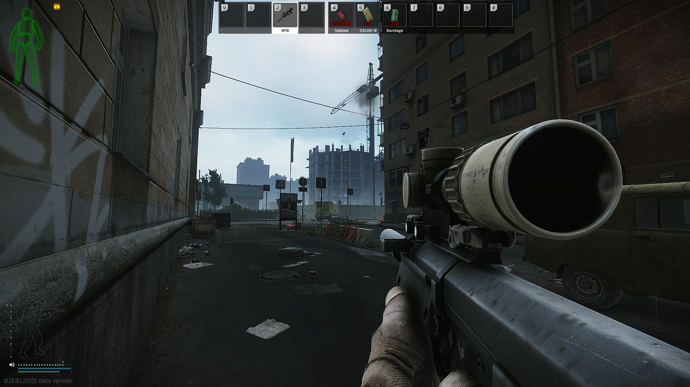
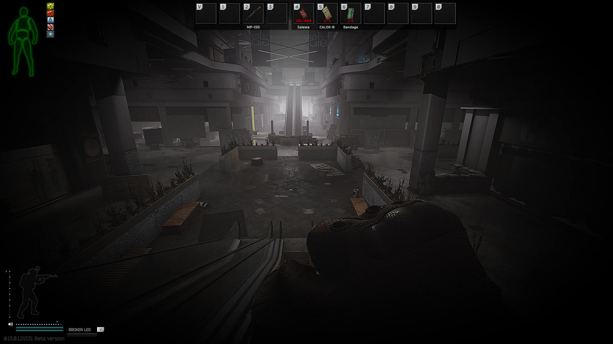
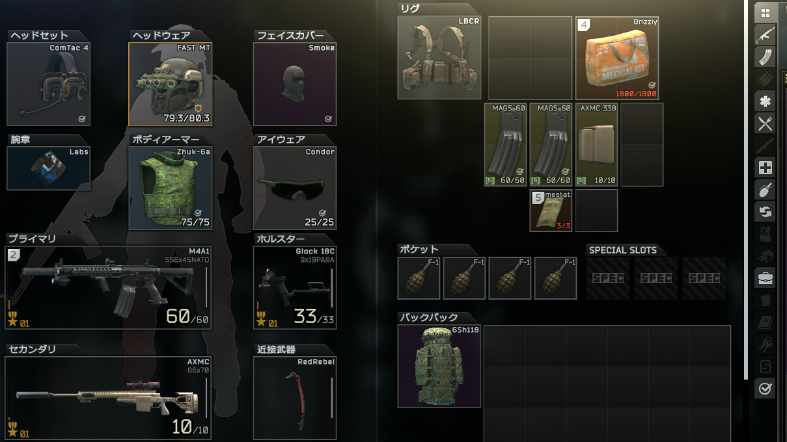
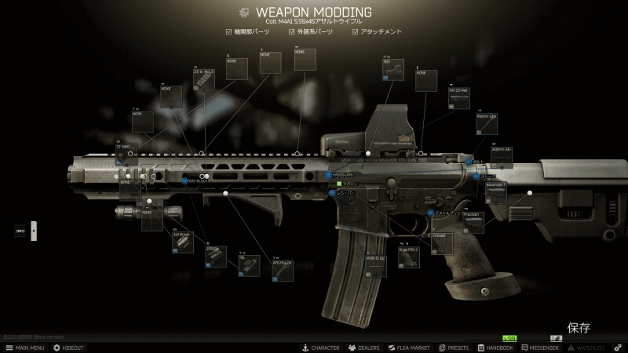
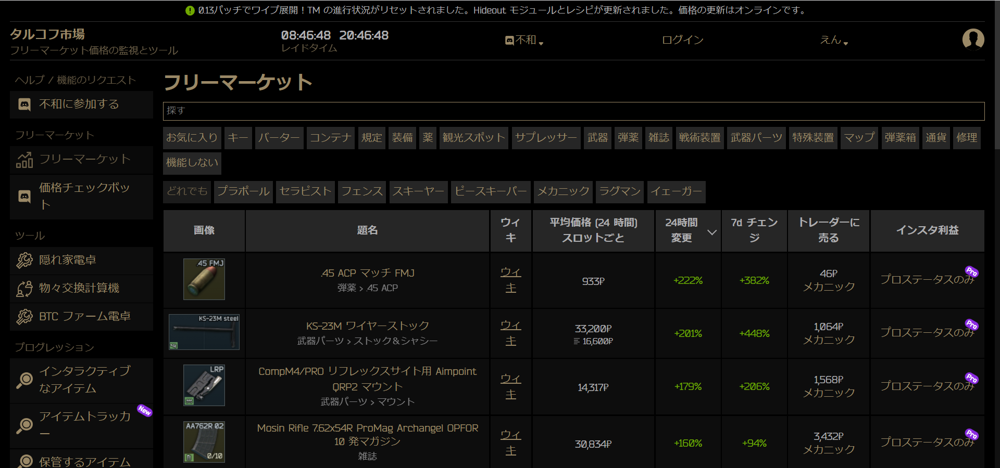
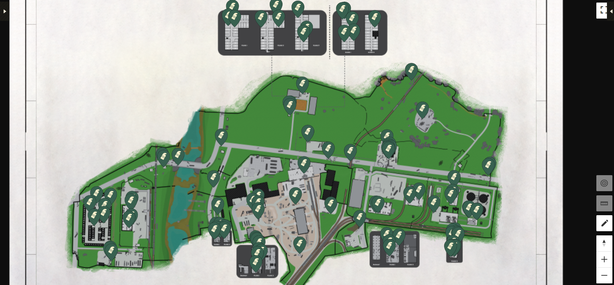

Escape from Tarkovの紹介
タルコフ(Escape from Tarkov)とは？
どんなゲームか詳しく解説していきます。

Escape from Tarkov公式サイト:https://www.escapefromtarkov.com
皆さんは「Escape from Tarkov(通称:ETF,タルコフ）」というゲームはご存じでしょうか？
巷では有名なゲームなのですがまだご存じない方もおおいのではないでしょうか。
有名ゲーム配信者の方がプレイしていることがありますね。
今回はタルコフとはどんなゲームなのか解説していきます。
タルコフの醍醐味やゲーム性を知ってもらえたら幸いです。
タルコフとは？
「Escape from Tarkov」はBattleftate Gamesによって2017年に制作(まだβテスト段階、完成未定)されたFPSゲームです。
プレイヤーからは「タルコフ」や「EFT」と呼ばれています。
仮想地域ノルヴィンスクの都市「タルコフ」が舞台になっており、プレイヤーは時間内に脱出を目指すゲームになっています。



今作は普通のFPSゲームとは違い、PvPvEになっています。プレイヤー VSプレイヤー VS NPCですね。またリアル志向型のゲームとなっています。
ゲームシステムが現実よりで空腹や脱水症状があり、銃で撃たれれば撃たれた部位が出血するので止血しないと死亡してしまいます。
出血には軽度の出血と重度の出血があり、止血するためには対応する医療アイテムを使用する必要があります。
そしてタルコフは頭を撃たれると一撃で死んでしまいます。
このような難しいゲームシステムから鬼畜FPS「ハードコアFPS」というジャンルに分類されます。
装備の種類、拡張性が高い
このゲームの特徴の一つであり、驚いたことが装備の数多すぎる！ということです。

カテゴリーだけでも
・ヘッドセット
・ヘルメット
・ボディアーマー
・フェイスカバー
・タクティカルリグ
・バックパック
・メインウエポン
・サブウエポン
・近接武器
と数が多いです

特にカスタマイズ性に優れているのが銃器です。
この武器につけられるアタッチメントでもすごい数があります。
もちろんアタッチメントによって性能が違うので反動を少なくする組み合わせや,
エルゴノミクス重視のカスタムなど自分の好みの性能にすることができます。
色のついたアタッチメントもあるので,見た目重視でカスタマイズするのもグッドです。
エディションの値段と購入特典一覧
購入することができるエディションの値段と購入特典は以下のとおりです。
| エディション |
料金 |
特典 |
| STANDARD edition |
44.99$ |
・クローズドベータへの即時アクセス
・製品版の先行ダウンロード
・標準サイズの収納スペース (10×28 マス)
・ゲームスタート時のボーナス装備:34アイテム |
| LEFTBEHIND edition |
74.99$ |
・クローズドベータへの即時アクセス
・製品版の先行ダウンロード
・大きなサイズの収納スペース (10×38 マス)
・ゲームスタート時のボーナス装備：40アイテム |
| PREPARE FOR ESCAPE edition |
99.99$ |
・クローズドベータへの即時アクセス
・製品版の先行ダウンロード
・非常に大きな収納スペース (10×48 マス)
・開始時点から全トレーダーと良好な関係性
・ゲームスタート時のボーナス装備：54アイテム |
| EDGE OF DARKNESS LIMITED edition |
139.99$ |
・クローズドベータへの即時アクセス
・製品版の先行ダウンロード
・最大サイズの収納スペース (10×68 マス)
・ゲーム内でのユニークなID表示
・開始時点から全トレーダーと良好な関係性
・全てのDLCへのアクセス権 (シーズンパス)
・ゲームスタート時のボーナス装備：66アイテム |
とりあえず遊んでみたいという方は「STANDARD edition」で問題ないと思いますが、収納スペースの大きさやトレーダーとの関係性はゲームを進めるうえで重要な要素になります。
エディションについては後からアップグレードも可能なので最初にどのエディションを選択しても問題ありません。
タルコフで便利なWebサイト
EFTで知っていると便利なWebサイトをいくつかご紹介します。
マーケットやマップなど様々なEFTに関するWebサイトがたくさんあります。そのうち自分がよく使っているものを紹介します。
TarkovMarket
TarkovMarketサイト:https://tarkov-market.com/
マーケットの現在の値段を確認できます。

MAPGENIE
MAPGENIEサイト:https://mapgenie.io/tarkov
tarkovのアイテムの位置などが細かく記されているMAPです。
隠しスタッシュやタスクの場所、脱出地点などを確認できます。
reserveのみ有料会員のみ閲覧でき、LightHouseはまだ未対応です。

EFTWiki
タスクやHideoutのアップグレード素材などTarkovのほとんどの情報が書いてあります。
日本語版
日本語版EFTWikiサイト:https://wikiwiki.jp/eft/
英語版
英語版EFTWikiサイト:https://escapefromtarkov.fandom.com/wiki/Escape_from_Tarkov_Wiki
動作環境
私が最初に使っていたPCのスペックが
| パーツ |
スペック |
| CPU |
Intel Core i5 10400 2.90 GHz 6コア |
| グラボ |
GTX 1660 super |
| メモリ |
16GB |
| SSD/HDD容量 |
1TB |
| OS |
Windows10 64bit |
でした。
これでも普通にプレイすることが出来ましたが、重いマップではプチフリーズが時々起きていました。
fpsは軽いマップで90前後、重いマップで60前後でした。
このことから、快適にプレイするには
| パーツ |
スペック |
| CPU |
Intel Core i5 11400 or Ryzen 5 3500 以上
|
| グラボ |
RTX 3060 Ti 以上 |
| メモリ |
16GB以上 |
| SSD/HDD容量 |
500GB以上 |
| OS |
Windows10/11 64bit |
が良いと思われます。
CPU
タルコフを快適にプレイするためには、Core i5シリーズ以上が求められます。
必ずしも最新である必要はありませんが、ボトルネックとなりグラボの性能を出し切れない可能性があるので古い型番は避けるのが無難です。
Intelの場合は、Core i5-11400番台以上、AMDの場合はRyzen 5 3500以上が目安となります。
タルコフは未だβ版(開発中)のゲームです。将来的にアップデートにより大きく変化する可能性があるので、予算にゆとりがある人は、Core i7シリーズまたはRyzen 7シリーズなどの上位シリーズを購入しておくのがおすすめです。
グラボ
グラボに関しては、RTX 3060 Ti以上が求められます。
推奨スペック的には、コスパがよいと評判のGTX 1660 / GTX 1660 superレベルで問題ありませんが、タルコフの魅力である世界観やFPSゲームを快適に楽しむという点を踏まえると、平均120fpsは欲しいところ
また、最近ではFPSゲームプレイと同時に配信・実況を行う人が増えているので、興味がある人はハイグレードスペックの購入をおすすめします。
メモリ容量
推奨メモリ容量について、人気FPSゲームのAPEXが8GB、PUBGが6GBに対して、タルコフは16GB以上とほかよりも高いのが特徴です。理由の一つにマップが広大であることによる影響があります。
また、β版(開発中)なので最適化が完了していないことも挙げられます。最適化が完了すれば、容量引き下げの可能性はありますが、快適にプレイするなら最低でも16GBは用意しておきたいところ。
FPSゲームの醍醐味である友人とのチャット・通話プレイやブラウザでの情報収集・確認しながらのプレイを考えると16GBでも足りない可能性があります。
タルコフを快適に遊びたいという人は、まずはメモリ容量を最優先に検討しましょう。CPUやグラボに比べると安価なので、余裕があれば32GB以上にしておくのがおすすめです。
2022年12月31日のアップデートでVer0.13.0.1.21523になり新MAPである「STREETS OF TARKOV」が実装されました。
メモリ容量が16GBではフリーズが良く起きてしまうのでメモリは32GB以上がおススメです。
ストレージ容量
ストレージ容量とは、データを保存するためのSSD/HDDの総称です。
SSDは読み込み速度が高速でPCやゲームの起動速度が早くなりますが、高価という特徴があります。反対にHDDは大容量かつ安価ですが、読み込み速度がSSDに比べて遅いです。
タルコフの必要容量は、19GB以上で一般的なゲーム容量になります。FPSゲームでは読み込みの速度が重要になりますので、可能であれば500GB以上のSSDを搭載したモデルを選ぶのがおすすめです。
また、最近ではゲーム容量が50GB〜100GBのものもありますので、複数ゲームをプレイする可能性を考えると1TBあると安心できます。
最後に
タルコフではこの記事で紹介したこと以外にも様々なことがあります。FPSとRPG要素があるゲームでやりこみ要素は無限大にあります。
タルコフをプレイするとわからないことばかりで大変だと思います。
ですが慣れてくるととても面白いゲームなので気になっている方がいればぜひプレイしてみてください！
感想フォーム
©2022 Atsushi Izumi.